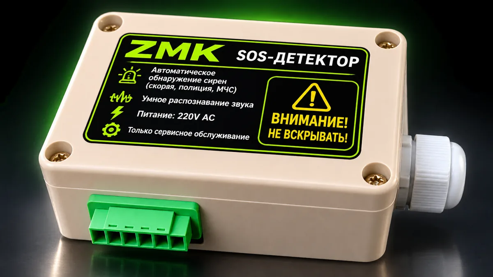
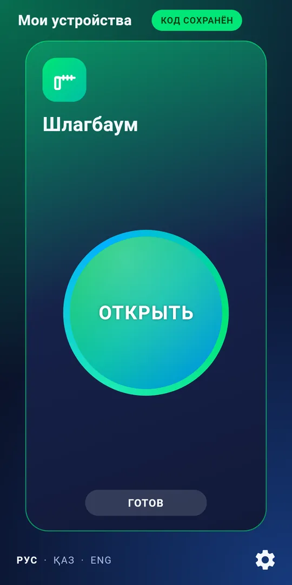
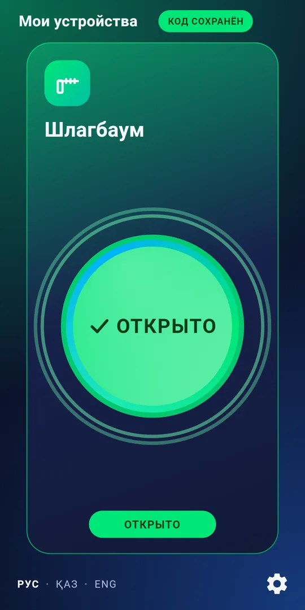

Шлагбаум и ворота — с телефона. А для скорой откроется самШлагбаум мен қақпа — телефоннан. Жедел жәрдемге өзі ашыладыBarrier and gates — from your phone. Opens by itself for an ambulance
Приложение ZMK открывает шлагбаум, ворота, калитку и дверь по Bluetooth, без интернета. SOS-детектор сам открывает шлагбаум, когда слышит сирену скорой, полиции или пожарных.ZMK қосымшасы шлагбаумды, қақпаны, қақпашаны және есікті Bluetooth арқылы, интернетсіз ашады. SOS-детектор жедел жәрдемнің, полицияның немесе өрт сөндірушілердің сиренасын естігенде шлагбаумды өзі ашады.The ZMK app opens barriers, gates, wickets and doors over Bluetooth, no internet needed. The SOS detector opens the barrier by itself when it hears an ambulance, police or fire siren.
- Без интернета, сервера и SIM-картыИнтернетсіз, серверсіз және SIM-картасызNo internet, server or SIM card
- Подключается к существующему шлагбауму и воротамБар шлагбаум мен қақпаға қосыладыConnects to your existing barrier and gates
- Приложение на русском, казахском и английскомҚосымша қазақ, орыс және ағылшын тілдеріндеApp in Kazakh, Russian and English
SOS · распознаёт сиреныSOS · сиренаны танидыSOS · recognises sirens

Выберите вариантНұсқаны таңдаңызChoose an option
Три вида устройств — под ваш объект и бюджет.Нысаныңыз бен бюджетіңізге сай үш түрі.Three kinds of device for your site and budget.
Управление с телефонаТелефоннан басқаруPhone control
- Шлагбаум, ворота, калитка, дверь — открываются с телефонаШлагбаум, қақпа, қақпаша, есік — телефоннан ашыладыBarrier, gates, wicket, door — open from the phone
- Свет и другие приборы: импульс, удержание, вкл/выкл, таймерЖарық және басқа құрылғылар: импульс, ұстап тұру, қосу/өшіру, таймерLights and other devices: pulse, hold, on/off, timer
- Без интернета — по BluetoothИнтернетсіз — Bluetooth арқылыNo internet — over Bluetooth
Телефон + SOS-детекторТелефон + SOS-детекторPhone + SOS detector
- Открывается со смартфона — приложение ZMKСмартфоннан ZMK қосымшасы арқылы ашыладыOpens from a smartphone with the ZMK app
- Сам открывает по сирене скорой, полиции, пожарныхЖедел жәрдемнің, полицияның, өрт сөндірушілердің сиренасы бойынша өзі ашадыOpens by itself on an ambulance, police or fire siren
- Работает без интернетаИнтернетсіз жұмыс істейдіWorks without the internet
SOS-детектордетекторdetector
- Сам открывает шлагбаум по сиренеСирена бойынша шлагбаумды өзі ашадыOpens the barrier by itself on a siren
- Работает без интернетаИнтернетсіз жұмыс істейдіWorks without the internet
- Со смартфона не открываетсяСмартфоннан ашылмайдыNo smartphone opening
Приложение ZMKZMK қосымшасыThe ZMK app
Одна большая кнопка — и шлагбаум открыт. Телефон связывается с устройством по Bluetooth, интернет не нужен.Бір үлкен түйме — шлагбаум ашық. Телефон құрылғымен Bluetooth арқылы байланысады, интернет қажет емес.One big button and the barrier is open. The phone talks to the device over Bluetooth, no internet needed.
- Несколько устройств: шлагбаум, ворота, калитка, гаражБірнеше құрылғы: шлагбаум, қақпа, қақпаша, гаражSeveral devices: barrier, gates, wicket, garage
- Таймер и управление светом и приборамиТаймер, жарық пен құрылғыларды басқаруTimer and control of lights and appliances
- Кнопка на рабочем столе телефона (Android)Телефонның жұмыс үстеліндегі түйме (Android)Home-screen button (Android)
- Русский, казахский и английскийҚазақ, орыс және ағылшын тілдеріKazakh, Russian and English


SOS-детекторSOS-детекторSOS detector
Скорая, полиция и пожарные проезжают без звонков охране.Жедел жәрдем, полиция және өрт сөндірушілер күзетке қоңырау шалмай өтеді.Ambulances, police and fire crews get through without calling the guard.
Слышит сиренуСиренаны естидіHears the siren
Узнаёт сигналы скорой, полиции, пожарных и других экстренных служб.Жедел жәрдемнің, полицияның, өрт сөндірушілердің және басқа шұғыл қызметтердің дабылдарын таниды.Recognises the signals of ambulances, police, fire crews and other emergency services.
Открывает шлагбаумШлагбаумды ашадыOpens the barrier
Подаёт команду «Открыть» на блок управления шлагбаума.Шлагбаумның басқару блогына «Ашу» пәрменін береді.Sends the "Open" command to the barrier's control unit.
Питание 220 В220 В қуат220 V power
Монтаж и подключение выполняет специалист.Орнату мен қосуды маман орындайды.Installation and wiring are done by a specialist.
Работа зависит от правильного размещения и подключения. Устройство не заменяет официальные системы экстренного оповещения.Жұмысы дұрыс орналастыру мен қосуға байланысты. Құрылғы ресми төтенше хабарлау жүйелерін алмастырмайды.Operation depends on correct placement and wiring. The device does not replace official emergency alert systems.
УстановкаОрнатуInstallation
Шлагбаумы и воротаШлагбаумдар мен қақпаларBarriers and gates
Подключение к входу «Открыть» блока управления.Басқару блогының «Ашу» кірісіне қосылады.Connects to the "Open" input of the control unit.
Калитки и двериҚақпашалар мен есіктерWickets and doors
Подключение к электрозамку — зависит от его типа.Электр құлпына қосылады — түріне байланысты.Connects to the electric lock, depending on its type.
Проверим заранееАлдын ала тексеремізWe check first
Пришлите модель или фото блока управления — скажем, подойдёт ли ZMK.Басқару блогының моделін не фотосын жіберіңіз — ZMK сәйкес келе ме, айтамыз.Send the model or a photo of the control unit and we will tell you if ZMK fits.
ВопросыСұрақтарQuestions
Нужен ли интернет?Интернет керек пе?Is internet needed?
Нет. Телефон связывается с устройством по Bluetooth, SOS-детектор работает сам.Жоқ. Телефон құрылғымен Bluetooth арқылы байланысады, SOS-детектор өзі жұмыс істейді.No. The phone talks to the device over Bluetooth, and the SOS detector works on its own.
Подойдёт ли к моему шлагбауму?Менің шлагбаумыма сәйкес келе ме?Will it work with my barrier?
Нужен вход управления «Открыть». Пришлите модель или фото маркировки блока — проверим.«Ашу» басқару кірісі керек. Блоктың моделін не жапсырмасының фотосын жіберіңіз — тексереміз.It needs an "Open" control input. Send the model or a photo of the unit's label and we will check.
Сколько устройств можно подключить?Қанша құрылғы қосуға болады?How many devices can I add?
В приложении можно добавить несколько устройств — например, шлагбаум, ворота и калитку.Қосымшаға бірнеше құрылғы қосуға болады — мысалы, шлагбаум, қақпа және қақпаша.You can add several devices in the app, for example a barrier, gates and a wicket.
Чем отличаются три варианта?Үш нұсқаның айырмашылығы неде?How do the three options differ?
«Управление с телефона» — открытие из приложения. «Телефон + SOS» — плюс открытие по сирене. «SOS-детектор» — только по сирене, со смартфона не открывается.«Телефоннан басқару» — қосымшадан ашу. «Телефон + SOS» — оған қоса сирена бойынша ашу. «SOS-детектор» — тек сирена бойынша, смартфоннан ашылмайды."Phone control" opens from the app. "Phone + SOS" adds opening on a siren. "SOS detector" opens on a siren only, not from a phone.
Узнайте цену и закажитеБағасын біліп, тапсырыс беріңізGet a price and order
Расскажите, чем нужно управлять, — ответим и подскажем с установкой.Нені басқару керегін айтыңыз — жауап беріп, орнатуға көмектесеміз.Tell us what you need to control and we will help with installation.
Офис в Алматы · отправляем по всему КазахстануКеңсе Алматыда · бүкіл Қазақстанға жіберемізOffice in Almaty · we ship across Kazakhstan
Александр · +7 707 266 91 54 (WhatsApp) · Telegram @Zmk_kz · zmkalexandr@gmail.com